📖 Nội dung bên dưới là bản gốc tiếng Anh (chưa dịch). Ảnh đã cache offline.
Brush Studio Settings
Explore the 14 adjustable attributes of Procreate brushes. Discover the variety of settings and fine control each one offers.
Attribute: Stroke Path
Procreate creates a stroke by plotting many points along the path your finger or Apple Pencil creates as it moves across the screen.
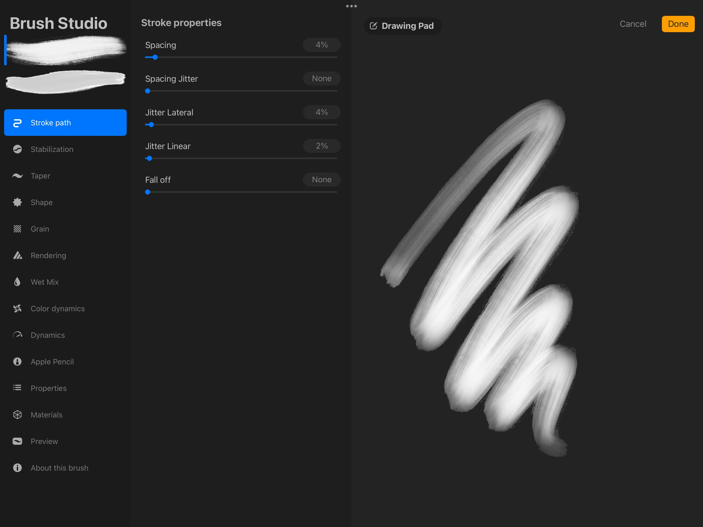
Stroke Properties
Adjust the behavior of your stroke by changing spacing, smoothing, jitter, and how quickly a stroke fades away.
Spacing
Sets how many times your brush shape ‘stamps’ itself along the path. When you add a lot of space, you will begin to see the brush as a series of shapes along the path with gaps between them. If you reduce down to no space, the brush shapes along the path will merge into one single fluid stroke.
Spacing Jitter
Adds variability to your Spacing value, making the space between stamps larger and more 'random' with higher values. This can have significant changes on stamp placement when combined with Lateral and Linear Jitter values, and it can be tied to the pressure input of an Apple Pencil, too.
Heads Up
If Spacing Jitter is set high, you will still notice changes to the spacing even if the base Spacing value is 0%, because there is a minimum Spacing value.
Jitter Lateral
Controls how much the brush stamps will shift perpendicular to your stroke. For example, if you made a stroke from left to right across the Drawing Pad, a high percentage of Jitter Lateral would push the stamps up and down vertically along the stroke path.
Jitter Linear
Controls the jitter of the stamp, but in the same direction as the stroke itself. If you have a high value here, even a short stroke from left to right will produce brush stamps that extend before and after the beginning and end of your stroke.
Pro Tip
Both Jitter Lateral and Jitter Linear can be controlled by the pressure and tilt values of Apple Pencil, and additionally barrel roll with Apple Pencil Pro. Tap on the numerical readout to locate and enable these.
Fall Off
Start your stroke at full opacity and then fade it away as it goes on. Turn it off for zero fade. Turn it right up to rapidly fade a stroke to invisibility.
Attribute: Stabilization
Stabilization smooths out strokes as you draw them. This makes hand drawn lines straighter than they would naturally be.
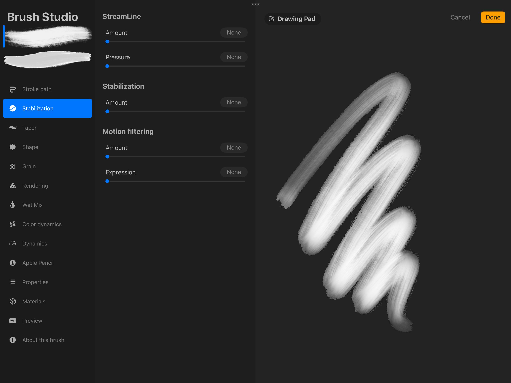
Stabilization in Procreate can be applied globally, or to individual brushes. Global settings are best if you need constant stroke stabilization across all your brushes.
To find out how to set up stroke stabilization globally check out Global Stabilization Settings under Accessibility in the Interface and Gestures section of this Handbook.
StreamLine
Assists in smoothing out wobbles or shakes in your line. StreamLine is particularly important for inking and calligraphy. StreamLine can be applied through Amount and Pressure settings.
Amount
Use the slider to turn Amount up for a smooth and even result. Turn it down or off for more natural linework that is less smooth.
Pressure
Use the slider to turn Pressure up for a longer, smoother application of pressure to a brush's stroke. Turn it down or off to make pressure kick in on a stroke quicker as you press.
Stabilization
Amount
Stabilization takes a moving average of a stroke and draws that on the canvas. The higher the Stabilization, the more it averages out the wobbles in a stroke. This makes strokes deliberately smoother and straighter.
Use the slider to set the percentage of Stabilization you prefer.
Stabilization is also dependent on the speed of your stroke. The faster you draw, the more it will smooth a stroke out.
Motion Filtering
Amount
Motion Filtering is Procreate’s version of Stabilization and uses more advanced algorithms. Motion Filtering deletes the extremities of a stroke’s wobbles entirely without averaging and squashing as Stabilization does.
Use the slider to set the percentage of Motion Filtering you prefer.
This allows for smoother and straighter strokes no matter what speed they are drawn. This also means wobbles and shakes will be less represented when making a stroke on the canvas.
Expression
Motion Filtering Expression only works when Motion Filtering is on. While Motion Filtering helps take the wobbles out of strokes, it can also make them too straight and smooth.
Motion Filtering Expression puts some expressive feeling back into strokes.
Use the slider to set the percentage of Motion Filtering Expression you prefer.
Heads Up
The higher Motion Filtering is set, the less effect Motion Filter Expression can have on a stroke.
Attribute: Taper
Adjusts your brushes thickness and opacity at the beginning and end of your stroke. This helps give your brush a natural, tapered appearance.
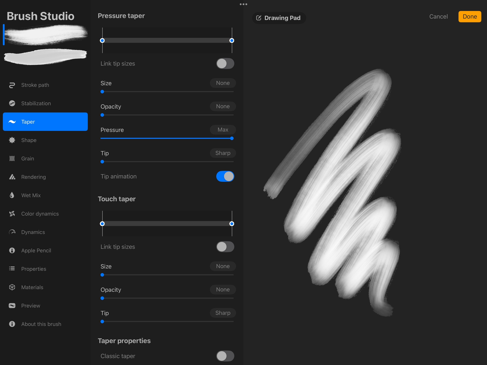
Pressure Taper
Extend the taper at the beginning and end of a brush stroke drawn with the Apple Pencil.
Strokes made with the Apple Pencil generally use pressure to taper strokes. This replicates the natural feeling of pencils and paintbrushes. It can be hard to achieve a nice long taper when lifting the Pencil off the canvas at the end of a stroke. This is due to the sensitivity of the Apple Pencil.
You can lengthen the existing tapers at the beginning and/or end of your strokes artificially for a more elegant line using Pressure Taper.
Pressure Taper Slider
This slider gives you a visual representation of how much artificial taper is at the beginning and end of your stroke. Move the sliders towards the middle of the stroke to adjust taper length. You can set taper at the beginning of the stroke, the end of the stroke, or both.
Link Tip Sizes
Switch this on to match the Pressure Taper adjustment when moving either of the sliders.
Size
Sets how severe your taper will transition from thick to thin.
Opacity
Sets the amount of transparency your taper fade to at its ends.
Pressure
Use the pressure feedback from the Apple Pencil for a more responsive natural taper that thins out faster at the end of a stroke.
Tip
On low settings, this makes your stroke taper behave as though you are using a brush with a very fine tip. On high settings, your taper responds as though drawn with a brush that has a chunky, thick tip.
Tip Animation
Toggle this switch on to see the effect Procreate applies to the taper of your stroke. Toggle it off to hide the animation depending on your preference.
Touch Taper
Add taper to the beginning and end of brush strokes drawn with a finger.
Procreate can't use pressure settings when you paint with your finger. This makes it impossible to achieve taper using Apple Pencil style pressure.
You can artificially add tapers to the beginning and end of your strokes using Touch Taper.
Touch Taper Slider
A visual representation of how much artificial taper is at the beginning and end of your stroke. Pull the sliders towards the middle of the stroke to adjust taper length. You can set taper at the beginning of the stroke, the end of the stroke, or both.
Link Tip Sizes
Switch this on to match the Touch Taper adjustment when moving either of the sliders.
Size
Sets how severe your taper will transition from thick to thin.
Opacity
Sets the amount of transparency your taper fade to at its ends.
Tip
On low settings, this makes your stroke taper behave as though you are using a brush with a very fine tip. On high settings, your taped responds as though drawn with a brush that has a chunky, thick tip.
Taper Properties
Set the Taper function back to the type used in older versions of Procreate.
Classic Taper
Procreate has updated the way taper renders since older versions. This toggle returns the taper behavior and appearance to previous versions.
Attribute: Shape
Change the shape of a brush tip by importing an image into the Shape Source. Adjust scatter, rotation, count (frequency), width, and other properties of the shape.
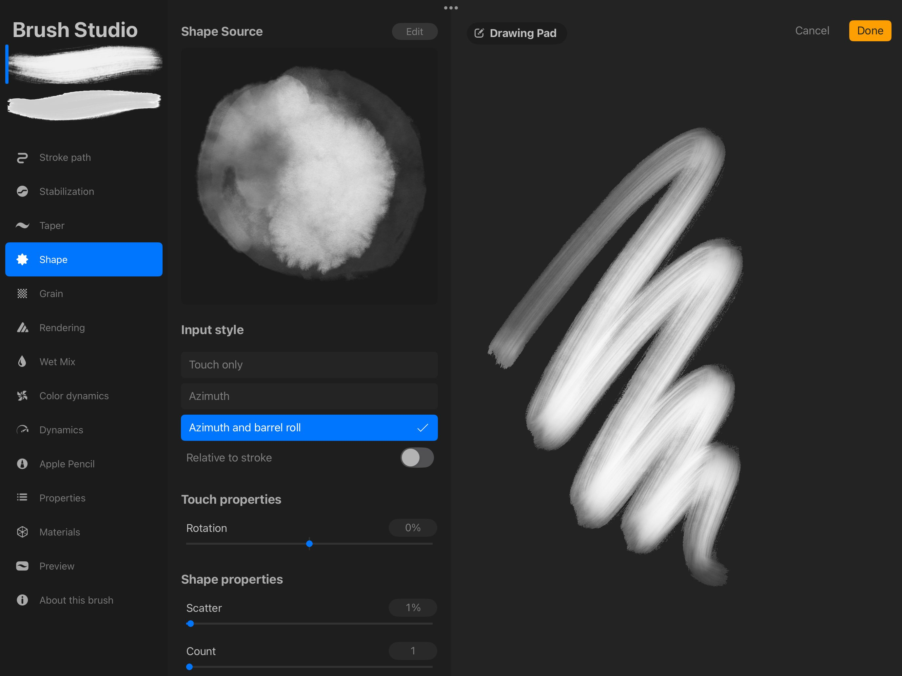
Procreate makes brushes with a shape (container) that holds a grain (texture).
You can see the shape of any brush when you tap your finger or Apple Pencil on the canvas. By doing this, you create a stamp instead of making a stroke.
Dragging this shape creates a stroke. A smooth circular shape will create a smooth even stroke. An irregular patchy shape creates a rougher stroke. This stroke changes thickness and texture when you drag the shape in different directions.
Adjust the shapes in existing Procreate brushes, or load your own shapes. You can do this by loading images with the Shape Source tool to create unique brushes.
Shape Source
Import images to use as the basis of brush shapes with this powerful tool.
Tap the Edit button on the top right corner of the icon preview to open the Shape Editor.
Shape Editor
Tap Import to import a new shape from a photo or file. You may also paste in copied images or access Procreate’s Source Library's default pre-made shapes.
Source Library
The Source Library offers you many unique shapes to use as the basis of your brushes. Access all these shapes from the Shape Editor (tap Shape → Edit → Import → Source Library).
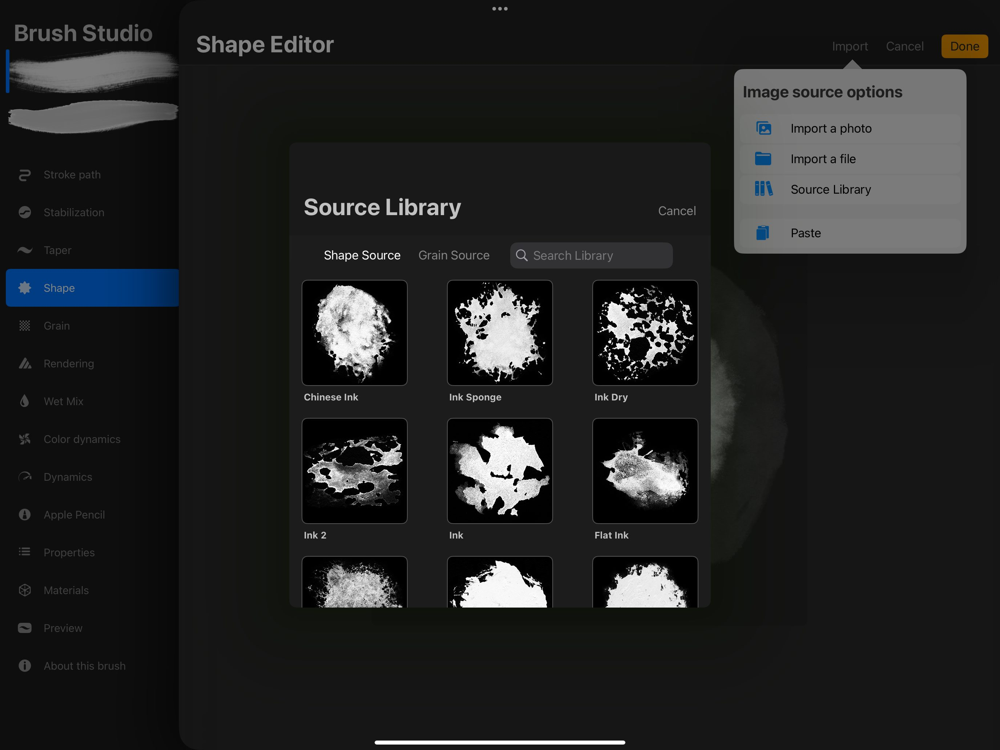
Scroll through the collection to browse a shape you want to use. Or, use the Search box to search for a particular shape type. For example, searching "gouache" will find all the shapes based on gouache paint marks.
Tap Done to close the Shape Editor and begin adjusting the behavior of your shape once you’ve imported or chosen your shape.
Shape Behavior
Change the behavior of the brush shape for each stamp within the stroke.
A stroke forms by ‘stamping’ the brush shape over and over again along a path. There are many different ways the same shape can stamp when making a stroke. A shape can rotate, randomize, stamp more than once at each point, or follow the movement or barrel roll of the Apple Pencil as it changes direction.
Pro Tip
To see these settings in action, it can be useful to go into Stroke Path and push the Spacing slider up. This lets you see the shapes as individual stamps rather than blurred together into a stroke. Even after you’ve set the spacing back to normal, this will help you visualize what each setting does.
Input style
You can control your brush shape settings with input style Touch only, Azimuth, or Azimuth and barrel roll (Apple Pencil Pro required).
Touch only
With this selected, touch will control the shape behavior based on the Rotation setting in Touch properties.
Azimuth
With this selected, you’ll add Azimuth to your input style options. Azimuth detects the radius of the Apple Pencil’s tilt as it travels through the stroke. It does this to determine which way the shape stamps should tilt. This creates an effect like a calligraphy pen. Azimuth overrides Rotation, but only for strokes drawn with the Apple Pencil.
Azimuth and barrel roll
This option adds barrel roll and azimuth control to your input style options. Barrel roll will rotate the orientation of your shape as you rotate your Apple Pencil Pro, giving you precise and intuitive control of your stroke's direction. With Relative to stroke switched on, the shape will always start in the same position at the start of your stroke. Switching Relative to stroke off gives you control over the initial rotation of your shape before you start drawing, which you can preview with Hover.
Heads Up
If Azimuth and barrel roll is selected and the user is using an Apple Pencil that doesn’t have barrel roll functionality, it will default to azimuth input.
Touch Properties
Rotation
Adjust the rotation of your shape in relation to the direction of your stroke. When set in the middle to 0%, shape direction remains static no matter which way your stroke travels. Set to the far right of the slider at 100%, your shape will rotate to follow the rotation of your stroke. Set to the far left of the slider at -100%, your stroke will rotate in the inverse direction to your stroke.
Shape properties
Scatter
By default, your shape will ‘stamp’ in the same direction without rotating. Use Scatter to randomize its rotation each time it stamps. Scatter is not affected by stroke direction.
Count
Set the shape to stamp more than once at each point, creating up to 16 stamps each time. You can see the effect of this best when used in combination with Scatter. As each of the multiple stamps on a given point will rotate in a different direction at random.
Count Jitter
Vary the number of times the stamp your shape applies at a point, based on your Count setting. With a Count jitter of 0%, the Count will remain the same for each stamp. If you increase it to 100%, the count will vary between 1 and your maximum Count setting.
For instance, if you have a Count of 10 and a Count jitter of 100%, it will randomly stamp your shape between 1–10 times. Alternatively, if you set Count jitter to 0%, it will stamp a count of 10 shapes every time. If Count Jitter is set at 50%, it will stamp between 5–10 times.
Randomized
Randomize the rotation of your shape when your stroke begins. This has the effect of making each stroke different from the one before it to creating a more organic feel.
Flip X / Flip Y
Flip your shape horizontally or vertically to create different and more organic effects.
Brush Roundness Graph
Drag the green node around the edge of the circle to change the base rotation of your shape. Drag the blue nodes to squash your shape.
Pressure Roundness
Squash your shape based on how much Apple Pencil pressure you apply.
Tilt Roundness
Squash your shape based on how much Apple Pencil tilt you apply.
Roundness Vertical Jitter
Adjust the amount that the Shape stamp will be randomly vertically compressed along its path.
Roundness Horizontal Jitter
Adjust the amount that the Shape stamp will be randomly horizontally compressed along its path.
Pro Tip
Control both Roundness Jitters with Apple Pencil Pressure by tapping on the numerical readout to the top right the slider.
Shape Filtering
Shape filtering adjusts ‘antialiasing’. Antialiasing is how the graphics engine handles shape edges.
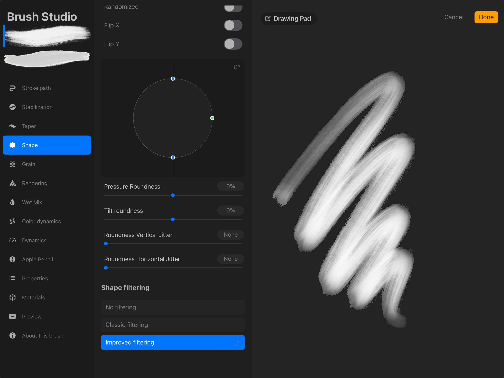
No Filtering
Doesn't soften the edges at all. This may result in a jagged look but preserves every detail of the core brush shape.
Classic Filtering
Softens the edges of your shape using the settings from earlier versions of Procreate.
Improved Filtering
Provides improved and updated antialiasing used in more recent versions of Procreate.
Attribute: Grain
Create a new grain from any image with the powerful Grain Editor. Adjust whether the grain stays still behind your stroke or moves along with it. Also tweak scale, depth, blend mode and more.
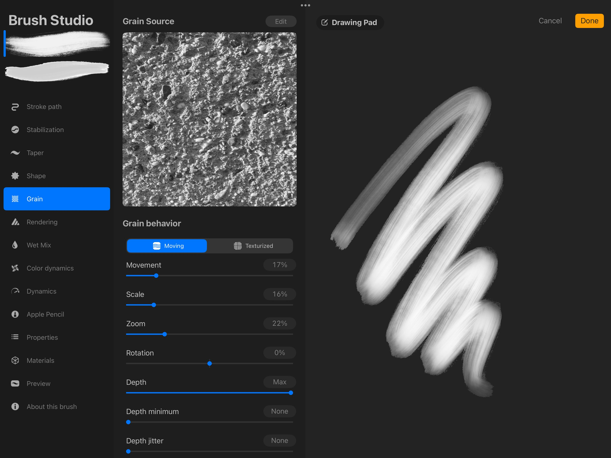
Grain is the texture that sits inside your brush shape. While the shape acts as a container for the grain, the grain acts like a paint roller. When you paint a stroke, the grain is ‘rolled’ inside the shape and onto your canvas.
Grain Source
Import your choice of images to use as textures for the grain of your brushes.
Tap the Edit button in Grain Source to open the Grain Editor and access the Source Library. This lets you import and edit images to turn them into tiling textures for your brushes. See below for more information.
Grain Behavior
Change the behavior of the grain inside your brush shape.
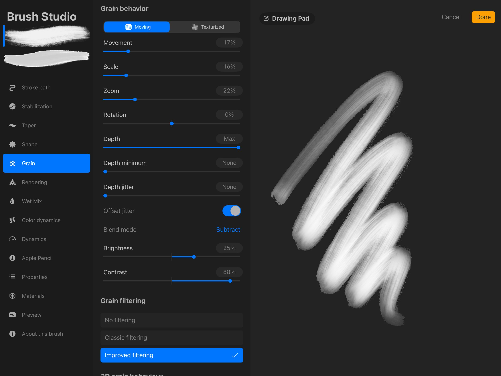
Moving
Set your grain to move with the stroke for a more streaky and blurred effect. Using the metaphor of grain being a paint roller, when set to Moving the roller is locked in place. This means the grain drags the texture around, rather than rolling it onto the canvas.
Moving and its various adjustment options create brush-like applications with grain. These behave more like traditional paint on canvas.
Texturized
Set your grain to stay as a static texture ‘behind’ your brush stroke for a crisp and clear effect. Using the metaphor of grain being a paint roller, when set to Texturized the roller is unlocked. This creates a continuous ‘stamp’ of the texture with no dragging or smearing.
Texturized and its various adjustment options create consistent textures with grain. These paint the grain's texture onto the canvas like a stencil more than a traditional brush.
Movement
Set the slider low for more drag. This gives a smeared effect and high for a roller effect much like the Texturized setting.
Scale
Adjust the size of the grain texture inside the shape.
Zoom
Setting the slider all way to the right, to Cropped, keeps the texture size fixed, no matter how large or small you make your brush while painting. Setting the slider all way to the left, to Follow Size means the grain will scale along with your brush size. This setting is only available when grain is set to Moving.
Rotation
This will smear the grain image based on directional stroke changes. This creates a similar effect to Moving. 100% inverse makes the grain rotate the opposite way to the stroke direction. At 0% it locks the grain rotation in place. And Follow Stroke makes the grain rotate to follow your stroke direction. This setting is only available when grain is set to Moving.
Depth
Adjust the strength of the texture established over the base color of the brush. Set at minimum, the texture won’t show at all. Set at maximum, the texture will be dark and vivid. When the grain is set to Moving, the pressure of a stroke affects how strong the contrast shows.
Depth Minimum
Sets the minimum level of contrast in a texture, beyond which the brush can no longer go. This is regardless of how much or little pressure is applied to an Apple Pencil. This setting is only available when grain is set to Moving.
Depth Minimum will only have effect when Depth Jitter or the advanced brush settings for Depth are turned on.
Depth Jitter
Swing between the texture and the underlying color of your stroke at random. This setting is only available when grain is set to Moving.
Offset Jitter
Offset where your texture places down each time you make a new brushstroke to create a more organic effect. With brushes designed to lay down a pattern, like the Grid brush, turn off Offset Jitter to keep the pattern consistent. This setting is only available when grain is set to Moving.
Blend Mode
Control how the grain texture blends with the underlying color of the brush using Blend Mode. This works both on Moving and Texturized brushes.
Brightness / Contrast
This makes the grain lighter or darker. It also increases or decreases the difference between the light and dark areas.
Grain Filtering
Grain filtering adjusts ‘antialiasing’. Antialiasing is how the graphics engine handles grain.
No Filtering
Does not soften the edges at all. This may result in a jagged look, but preserves every detail of the grain.
Classic Filtering
Softens the edges of your grain using the settings from earlier versions of Procreate.
Improved Filtering
Provides improved and updated antialiasing used in more recent versions of Procreate.
3D Grain Behavior
Grain behavior in 3D dictates if the pattern of your grain remains static or shifts depending on which way your camera is angled on a 3D object.
Grain follows camera
With the toggle off the pattern of your grain will repeat no matter which way your camera is angled.
This is ideal for replicating large areas of perfect repeating patterns such as bricks in a wall.
With the toggle on the pattern of your grain will shift to reflect which way your camera is angled. This means your pattern won’t repeat, and will paint over other area of existing pattern if you move your 3D object.
This is ideal for replicating how patterns move and shift around folds and contours on materials such as cloth or fabric.
Grain Editor
Import new textures from photos or files. You may also paste in copied images, or access the Procreate Source Library's default pre-made textures.
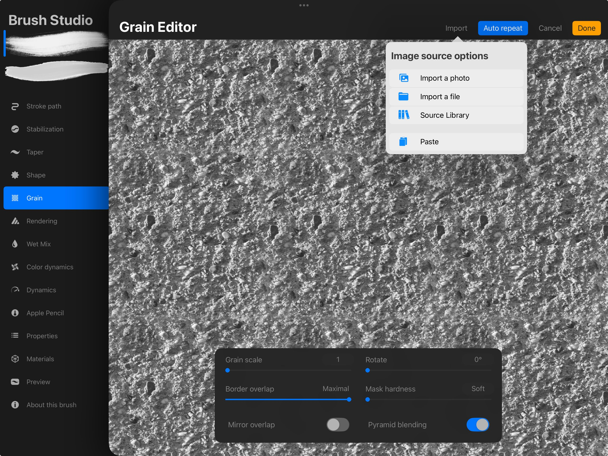
Pro Tip
Create unique new brushes by using your iPad to photograph environmental textures. Stone, wood, cloth, and marks made with ink and paint make interesting bases for custom brushes.
Import
The Import menu offers four ways to import images to use as the basis for new brush textures.
Import a Photo
Select a photo from the iOS Photos app, including photos you've taken yourself.
Import a File
Select a photo from the iOS Files app.
Source Library
Select from Procreate's inbuilt range of pre-made textures. See below for more detail on the Source Library.
Paste
Paste a copied image from your clipboard.
Auto Repeat
Turn a snapshot of a texture into a seamless tile using Auto Repeat.
Grain Scale
Adjust the size of the texture within each tile.
Rotate
Adjust the angle of the texture within each tile.
Border Overlap
Change how much the borders between tiles overlap.
Mask Hardness
Adjust the amount of blurring used to blend the tiles together.
Mirror Overlap
Flip the pattern at the edge of each tile so it lines up with the surrounding tiles to help conceal tile edges.
Pyramid Blending
This new form of blending stitches together complex patterns with differing levels of detail to help create a seamless grain.
Auto Repeat previews all changes live.
Pro Tip
Pyramid blending is ideal for irregular natural textures like wood and stone. The simpler edge blending modes above work best for more high-contrast regular patterns.
Return to Brush Studio
Cancel
To exit without applying any changes, tap Cancel.
Done
Tap Done to close the Grain Editor and begin adjusting the behavior of the grain you created.
Pro Tip
Two-finger tap on your texture to invert the grayscale tones in your image. Dark areas become light, and light areas become dark. Two-finger tap again to reverse this effect.
Source Library
Access the Source Library from the Grain Editor. The Source Library offers you over 100 unique textures to use as the basis of your brushes.
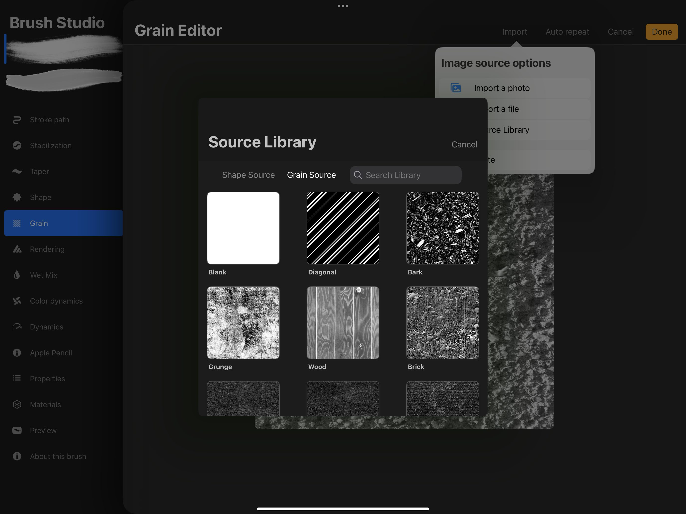
From the Grain section of the Brush Studio, tap Grain Source > Import > Source Library. Tap a texture to exit back to the Grain Editor and begin making adjustments.
Shape Source
Use the Shape Source library to select a shape as a base for your brush.
Grain Source
Procreate's library of pre-made textures opens by default when you enter the Source Library. You can access this from the Grain Source interface. The Source Library offers over 100 searchable textures ideal for brush creation.
Pro Tip
Even though they aren't custom made for the purpose, you can use the Shape Source for creating grain textures. You can also use the Source Library textures as a base for brush shapes.
Search Library
Search the grain names for particular types of texture. For example, searching "Paper" will find all the textures based on paper.
Cancel
To exit without selecting a texture, tap Cancel.
Attribute: Rendering
Procreate offers many ways to render the brush to the screen. Go under the hood to adjust render modes. Change the way strokes and colors behave on your brush and when interacting with the canvas.
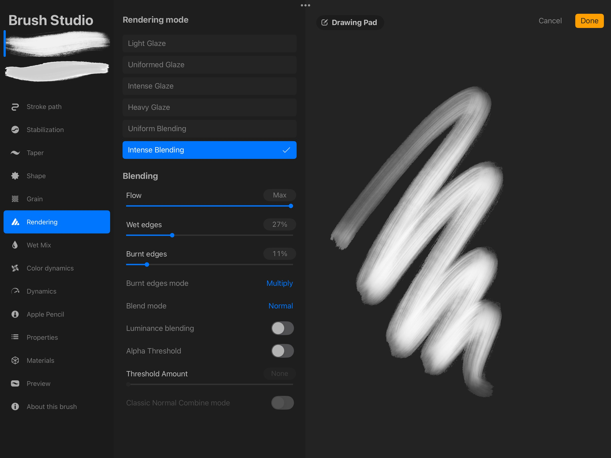
Rendering Mode
Procreate gives you full control over how it renders your brush strokes. It also lets you control how brushstrokes interact with one another.
These effects are best understood by imagining physical paint on canvas. On the light-rendering end of the spectrum, Light Glaze is like laying down diluted paints. On the heavy-rendering end, Intense Blending is more like laying thick paint onto the canvas. The following list displays Rendering modes from lightest to strongest.
Light Glaze
This is Procreate’s standard and lightest rendering mode.
Uniformed Glaze
This rendering mode is similar to the rendering used in Adobe® Photoshop®.
Intense Glaze
This mode renders colors onto the screen with a slightly heavier touch than Light and Uniformed Glaze.
Heavy Glaze
This a strong rendering mode that still maintains the paint’s opacity when mixing.
Uniform Blending
Combines the Adobe® Photoshop® rendering style with a caustic approach to rendering color. This gives a very pronounced Wet Mix effect.
Intense Blending
Intense Blending is great for wet brushes that squash and mix colors together. The heaviest rendering mode offered and gives a full flow effect to the paint’s Wet Mix.
Blending
Select from a variety of options to adjust the way your strokes interact. Control how pigment dilutes and how colors mix into each other. Adjust the flow of your brush, and create the effect of wet edges, burnt edges and more.
Flow
Adjust how much color and texture flows from your brush onto the canvas.
Wet Edges
Soften and blur the edges of your brushstrokes to mimic pigment bleeding into paper.
Burnt Edges
This creates a ‘color burn’ effect around the edges of the stroke when you layer brushstrokes. Burnt Edges also darkens the edges where colors overlap.
Burnt Edges Mode
Set the Blend Mode for the above effect. This enables you to create a variety of interesting layering effects that apply only to the edges of your brush.
Blend Mode
Set the Blend Mode for the entire brushstroke, not only the brushstroke edges.
Luminance Blending
Blend modes usually affect the color values of a brushstroke. Flip this toggle to blend the lightness values instead.
Alpha Threshold
Enabling this sets a threshold at which any pixel produced by the brush will be either 100% opaque or 100% transparent based on the original opacity value of each pixel.
Adjusting the slider sets the threshold. At lower values, less opaque pixels will be treated as 100% opaque, and at higher values, the lower-opacity pixels will be canceled out completely. This can be useful to prevent antialiasing for brushes that require very crisp, unsoftened edges, like in pixel art.
Classic Normal Combine mode
Toggling this on reverts how dual brushes blend together when set the 'Normal' blending mode. The behaviour matches that of Procreate 5.3 and previous versions.
Pro Tip
In most cases this should be left off, unless you are accustomed to a 'Normal' blended dual brush from an earlier version of Procreate.
Attribute: Wet Mix
Tweak how your brush interacts with color, and how the color you lay down interacts with the canvas.
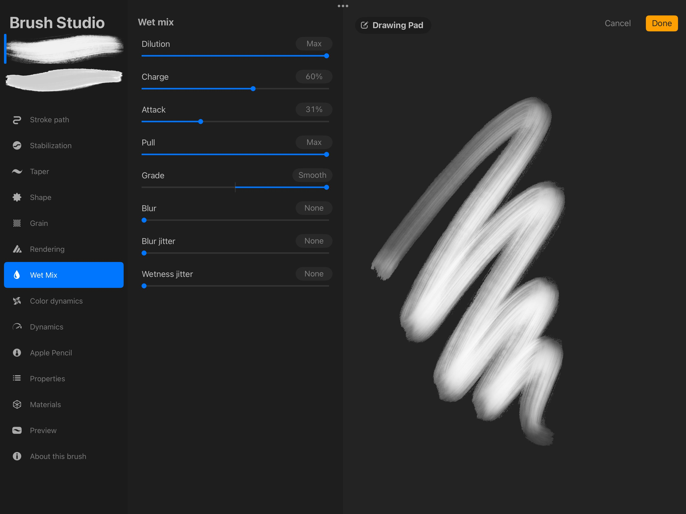
Dilute the pigment on your brush. Start out with a lot of paint on the brush or only a little. Make your pigment bleed into other colors or pull them around.
Fine adjustments to the interplay of Dilution, Attack, and Charge can layer on top of other settings. This helps create brushes with very realistic behaviors.
Dilution
Set how much water mixes in with the paint on your brush. Increase Dilution to give your paint a transparent effect.
Charge
Set how much paint is applied onto your brush when you begin to make a stroke.
Like a real paintbrush, the longer you drag your stroke out, the more paint it will leave behind on the canvas. As the brush runs out of paint, the trail of color it leaves will become less intense.
Recharge the brush by ending a stroke and lifting it from the canvas. When you put it down again, it will be as though you dipped it back into the color on your paint palette. This effect is most obvious in combination with high Dilution.
Attack
Adjust the amount of paint that sticks to the canvas. Set it high for the appearance of thick, bold paint applied evenly along your whole stroke.
Tap the amount above the Attack slider to access advance settings to apply Attack to azimuth, tilt and barrel roll. Barrel roll settings will apply only to Apple Pencil Pro users.
Pull
Set the strength of how your brush pulls paint around the canvas. This includes paint that is already laid down. This is a great way to mix and drag colors around for a more organic effect.
Grade
Set the chunkiness and contrast of your brush texture.
Blur
Adjust the amount of blur your brush applies to the paint on your canvas. Also control how much the blur spreads when you apply a brush stroke.
Blur Jitter
Adjusts the randomization of how much blur on each stamp laid down by the brush when you apply a brush stroke
Wetness Jitter
Randomize how much water mixes in with the paint at any point during the brushstroke. This helps give your stroke a more realistic effect.
Attribute: Color Dynamics
Unlock the full power of digital art. Set your brush to change color, saturation, brightness and more based on the pressure, tilt, or color you apply to your Apple Pencil. Rotation is only available on the Apple Pencil Pro with barrel roll.
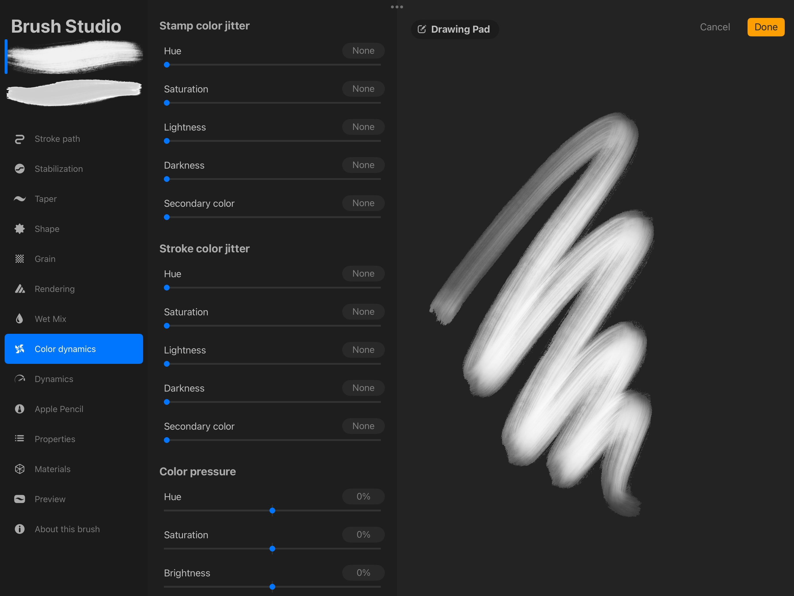
Color Dynamics lets your brush shift through different types of color values. These values are hue, saturation, lightness and darkness. You can also choose a secondary color, and shift between primary and secondary colors with each stroke. You can use all these as individual settings, or in combination and control them in a variety of ways.
Stamp Color Jitter
Randomizes how color affects each individual stamp within your brushstroke.
Hue
Each stamp will deviate from your chosen brush color at random. Set the slider low to make these deviations minor. Set the slider high to allow the brush to jitter through a larger spectrum of color. The best way to preview what this setting does is to set the Stroke Path > Spacing slider so you can see individual stamps in your stroke. Also ensure that the Saturation slider below Hue is also set high.
Saturation
Each stamp will deviate from your chosen brush saturation at random. Set the slider low to make these deviations minor. Set the slider high to allow the brush to jitter between zero and full saturation.
Lightness
Each stamp will deviate from your chosen brush lightness by jumping to lighter shades at random.
Darkness
As above, but the opposite: each stamp will deviate from your chosen brush lightness by jumping to darker shades at random.
Secondary Color
Each stamp in your stroke will jitter at random between your currently chosen (Primary) color, and a Secondary color you can set in the Color Panel .
Stroke Color Jitter
Each time you make a stroke, these jitters will change a color attribute of the entire stroke.
Hue
Each individual brushstroke will deviate at random from your chosen color. Set the slider low for minor deviations. Set it all the way up to jitter through the entire color spectrum.
Saturation
Each individual brushstroke will deviate from your chosen color’s saturation at random. Set the slider low for minor deviations. Set it all the way up to jitter from completely desaturated (white, black, or grey) to complete saturation (very bright colors).
Lightness
Each individual brushstroke will deviate at random from your chosen color’s lightness by getting lighter to some degree. Set it low to allow only minor jumps in lightness. Set high to allow it to go to pure white.
Darkness
Each individual brushstroke will deviate at random from your chosen color’s darkness by getting darker to some degree. Set it low to allow only minor jumps in darkness. Set high to allow it to go to pure black.
Secondary Color
Each individual brushstroke will be a random shade of color that falls between your chosen Primary and Secondary colors.
Color Pressure
The pressure applied with your Apple Pencil determines what color you will apply to the canvas.
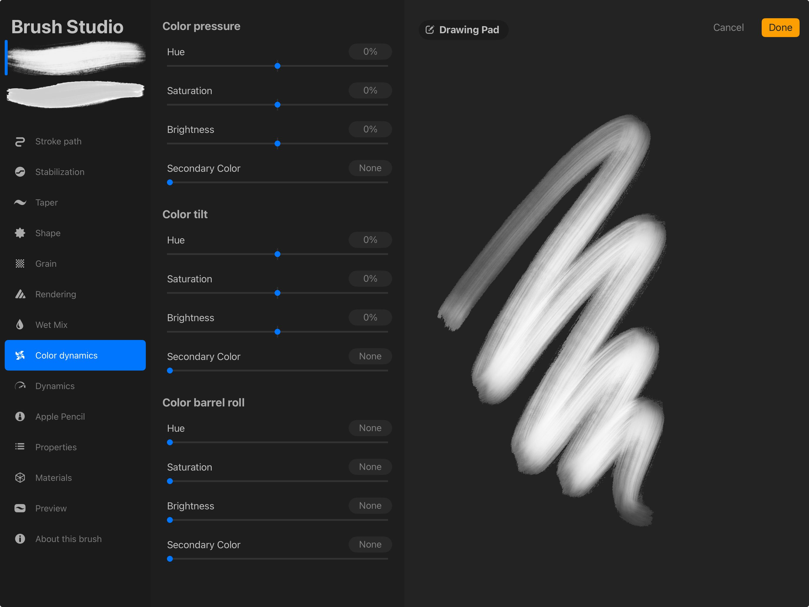
Hue
Pressure changes the color within a stroke. If set at 100% your stroke transitions through the entire color spectrum. This occurs when you transition from light to heavy pressure.
Saturation
Pressure changes the saturation within a stroke. If set at 100% your stroke transitions from white to a completely saturated color. This occurs when you transition from light to heavy pressure.
Brightness
Pressure changes the brightness within a stroke. If set to 100% your stroke transitions from white to black. This occurs when you transition from light to heavy pressure.
Secondary Color
Pressure transitions from the Primary to the Secondary color within a stroke.
Color Tilt
The tilt applied with your Apple Pencil determines what color is applied to the canvas.
Hue
The tilt of your Apple Pencil changes the color within a stroke.
Saturation
The tilt of your Apple Pencil changes how vivid your chosen color appears within a stroke.
Lightness
The tilt of your Apple Pencil changes how light or dark your chosen color appears within a stroke.
Secondary Color
Tilt transitions from the Primary to the Secondary color within a stroke.
Color barrel roll
The rotation applied with your Apple Pencil Pro using barrel roll determines what color is applied to the canvas.
Hue
The rotation of your Apple Pencil Pro changes the color within a stroke.
Saturation
The rotation of your Apple Pencil Pro changes how vivid your chosen color appears within a stroke.
Lightness
The rotation of your Apple Pencil Pro changes how light or dark your chosen color appears within a stroke.
Secondary Color
Rotation transitions from the Primary to the Secondary color within a stroke.
Attribute: Dynamics
Set your brush to make dynamic changes based on how fast you make strokes. Add unpredictability to a brush by setting your brush to jitter size and opacity at random.
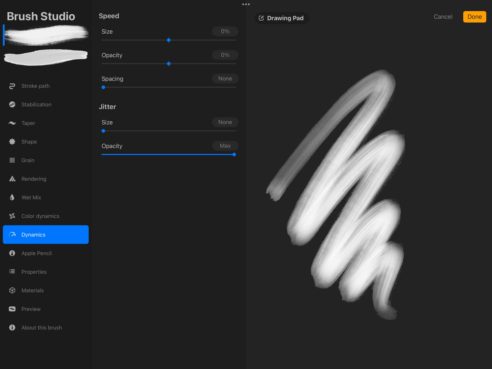
These settings are not dependent on the pressure and tilt of the Apple Pencil. For those painting with a finger, use these attributes to create more dynamic brushstrokes.
Speed
Use the speed of your stroke to determine its appearance.
Size
Use the speed of your stroke to vary its size. When the Size slider is set to -100%, drawing slowly will produce a thinner stroke. Shifting the slider to +100% will reverse this, making thinner strokes the faster you draw. With the slider set to 0%, the stroke will remain a uniform thickness.
Opacity
Use the speed of your stroke to vary its opacity. When the Opacity slider is set to -100%, drawing slowly will reduce the Opacity of the stroke. Shifting the slider to +100% will reverse this, reducing the Opacity of a stroke the faster you draw. With the slider set to 0%, the stroke will remain a uniform 100% opacity.
Spacing
Adjust the spacing of your brush stamps based on the speed of the stroke. A higher value means more spacing the faster you make the stroke.
Jitter
Dynamically alter the appearance of the shape stamp throughout your stroke.
This setting is random, and not affected by speed.
Size
Alter the size of the shape stamp at random throughout your stroke.
Opacity
Alter the opacity of the shape stamp at random throughout your stroke.
Attribute: Apple Pencil
Make fine adjustments to how the Apple Pencil interacts with your brush. Set pressure or tilt to affect fundamental behaviors of your brush, such as size, opacity, flow, bleed and more.
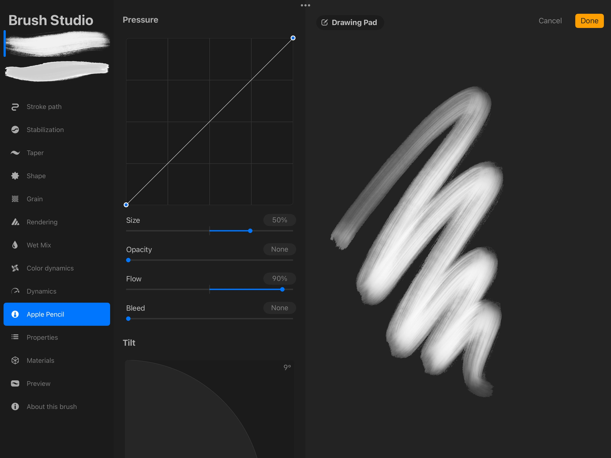
For more control over the way the Apple Pencil interacts with Procreate in general, see Actions → Preferences .
Pressure Graph
Adjust the overall pressure for all settings within an individual brush. Any time that Apple Pencil Pressure is used within your brush, this graph will dictate:
the amount of pressure you apply with Apple Pencil (horizontal axis)
the effect of the pressure input (vertical axis)
You can add up to four extra nodes to customise the pressure, and you can tap on a node to delete it or reset the graph.
Size, Opacity, Flow and Bleed can have their percentage amounts adjusted using sliders. Or adjust by tapping on their Value fields and using Numeric entry.
Each individual Pressure setting comes with its own adjustment settings. Access these by tapping the Value field followed by the Pressure Button. This gives you access to the Pressure curve and Response speed adjustments for your Apple Pencil. These will respect the overall pressure graph.
Heads Up
The pressure graph applies to the properties of your brush, but it it will still respect any global settings in the Actions menu, in Prefs → Pressure & Smoothing.
Size
Adjust how large or small the tip of your brush becomes under varying pressure.
Opacity
Adjust the transparent-to-opaque range of your brush under varying pressure.
Flow
Adjust how much paint your brush lays down under varying pressure.
Bleed
Adjust how much your brush bleeds around the edges into the canvas under varying pressure.
Tilt
Tweak the way the Apple Pencil tilt responds. These Tilt settings have a trickle-down effect on all other tilt-based adjustments.
You can tilt your Apple Pencil through a range from 0 to 90 degrees. 0 degrees means the Pencil is flat against the canvas. At 90 degrees the Pencil is completely upright.
The Tilt graph registers the Apple Pencil tilting from 0 to 90 degrees. But the tip of the Apple Pencil does not physically touch the canvas between 0 to 15 degrees. Settings tied to a number within this range will have no effect. Between 16 to 30 degrees, the response from the Apple Pencil may be inaccurate. Tilt settings are best triggered between 30 to 90 degrees. This range of tilt corresponds with how people actually hold and use pencils.
Use the Tilt Graph to set a tilt ‘trigger point’. A trigger point is the degree of tilt at which an attribute of your brush suddenly changes to something else. If you set the Tilt Graph to 45 degrees, all other tilt-based features will trigger only once your brush is on a 45 degree angle.
Pro Tip
Using the Tilt Graph, you could create a brush that behaves like a graphite pencil. This offers a sharp point when you draw with it upright, switching to a broader, smoother surface for shading when you tilt it on an angle.
Tilt Graph
The Tilt Graph is a visual representation of how tilted your Pencil needs to be before other Tilt settings take effect. Pull the blue node to adjust the degree of tilt.
Opacity
Adjust the way the tilt of your Apple Pencil affects the opacity of your stroke.
Gradation
Turn this slider up to create a softening effect when shading with a brush on an angle. This mimics the behavior of physical pencils.
Bleed
Adjust how much the brush bleeds around the edges when tilted. This creates a reduction in fine detail.
Size
Adjust the effect of tilt on brushstroke thickness.
Size Compression
Toggle on to prevent the texture within the brush growing along with the brush size.
Barrel roll
Tweak the way the Apple Pencil responds to brush size, opacity and bleed when rotating Apple Pencil Pro.
Size
This slider controls a brush’s shape size while rotating Apple Pencil Pro.
At 0%, strokes will maintain a consistent thickness while rotating. Increasing or decreasing the Size slider will cause a stroke to thicken or become thinner when rotating Apple Pencil Pro.
Opacity
This slider controls a brush’s opacity while rotating Apple Pencil Pro.
When set to None, strokes maintain 100% opacity while rotating. Increasing the Opacity slider causes a stroke to reduce opacity by the % set when rotating Apple Pencil Pro.
Bleed
This slider controls a brush’s bleed while rotating Apple Pencil Pro.
When set to None, strokes won’t bleed while rotating. Increasing the Bleed slider will cause a stroke to bleed by the % set when rotating Apple Pencil Pro.
Pro Tip
Each of the above barrel roll settings can have Relative to stroke toggled on or off. With relative to stroke switched on, the stroke’s shape will always start in the same position. Switching Relative to stroke off gives you control over the initial rotation of your stroke’s shape before you start drawing, which you can preview with Hover.
Cursor Outline
Change the contrast and color of the brush cursor outline.
None
Display no cursor outline.
Contrast
Display a greyscale cursor outline that dynamically changes shade dependent on the background color the cursor is displaying over.
Active color
Display the cursor in the selected Active Color.
Heads Up
Make sure the Brush outline style is set to Per Brush in Actions > Prefs > Advanced cursor or these outline settings will be overridden and not display.
Hover
Change the opacity of the brush preview seen inside the brush cursor outline while hovering.
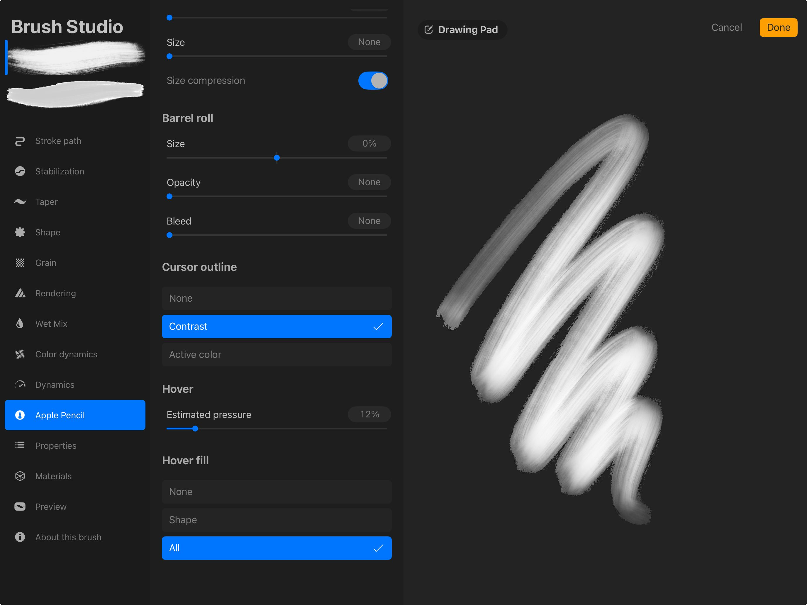
The Estimated pressure slider replicates the amount of pressure-controlled color displayed inside of the cursor outside when using hover.
Set the slider to Disabled to display no pigment, set the slider to Max to display 100%, or set the slider to anywhere in between to display your chosen percentage of color inside the cursor outline.
Hover fill
Change the color and texture of the preview seen inside the brush cursor outline while hovering.
These controls adjust the color and texture displayed inside the cursor outline when using hover.
None
Display just the cursor outline with no color or texture.
Shape
Display a solid color inside the cursor outline.
All
Display the texture and color of the brush inside the cursor outline.
Attribute: Properties
Establish miscellaneous settings that establish how the brush looks in preview form in the Brush Library. This also sets how it behaves within the Procreate interface.
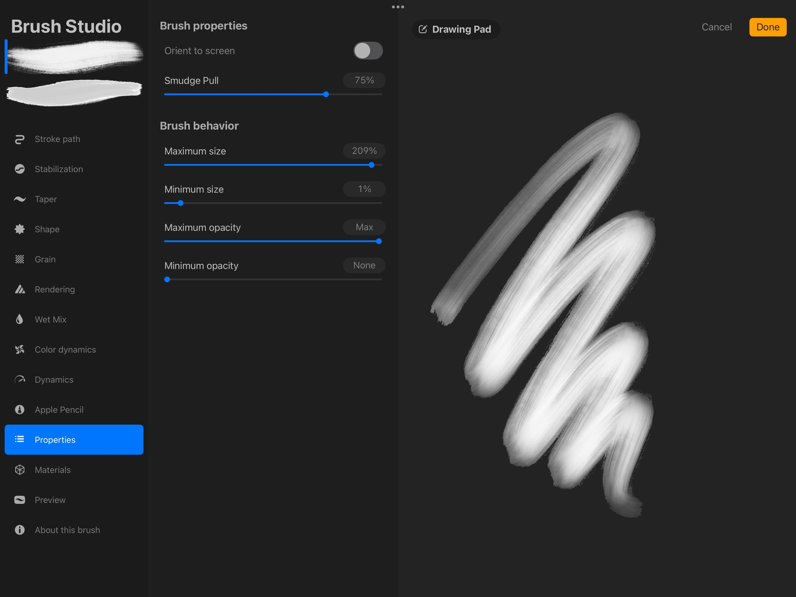
Brush Properties
Change the way your brush preview displays in the Library, how the brush orients to your screen rotation, and set a default Smudge strength.
Use Stamp Preview
The preview of each brush in the Brush Library is usually expressed as a stroke. Toggle this switch to express the preview as a shape stamp instead.
Orient to Screen
This setting only applies when a brush has a distinct ‘up’ and ‘down’ to its stroke. Toggle off to make the shape orientation consistent for the canvas. This applies no matter how the device rotates. Toggle on to make the shape orientation consistent with the device's current orientation.
Preview Size
Set the size of the stroke or shape stamp in the preview of this brush appears in the Brush Library.
Smudge Pull
Adjust how much a brush smudges when set as the Smudge tool.
Brush Behavior
Set size and opacity boundaries on your brush. These settings control the upper and lower limits of the size and opacity sliders in the Procreate sidebar .
Maximum / Minimum Size
Set an upper and/or lower size limit on the sidebar size slider.
Maximum / Minimum Opacity
Set an upper and/or lower opacity limit on the sidebar opacity slider.
Attribute: Materials
Use metallic and roughness to recreate real world materials and finishes from matte to shiny as a brush for 3D painting.
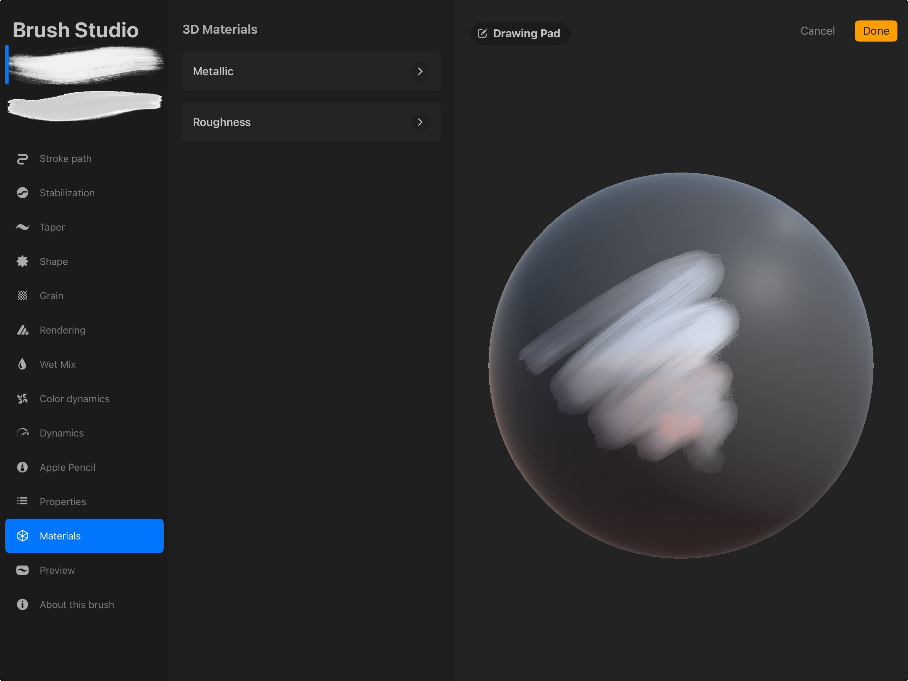
3D Materials
In Procreate Material Brushes consist of three values to create a given material — color, metallic and roughness. Color is provided by your active color, while Metallic and Roughness are set in the Brush Studio's 3D Materials settings. Both Metallic and Roughness have their own independent settings, but work in conjunction with each other to create a Material Brush.
Metallic
The Metallic settings define how metallic the strokes of your material brush will appear and what textural grain those strokes contain.
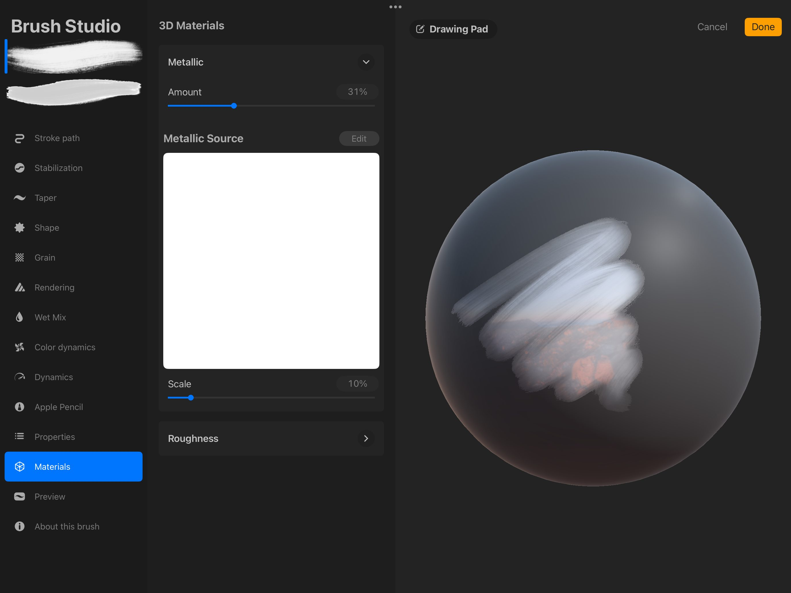
Amount
Amount sets the level of metallic appearance from 0% being Non-metallic through to 100% being Metallic.
While you can set this amount anywhere between 0-100%, it's worth noting that in most real-world cases something is either metallic or not, with very few naturally occurring materials being in-between.
Metallic Source
The Metallic Sources acts in a similar way to brush grain, adding textural qualities to the way a brush lays down its metallic strokes.
All Metallic Sources import as grey-scale images. As the brush lays down a stroke, white areas of the Metallic Source will allow the metallic to show through, where dark or black areas will block the metallic effect of the brush stroke.
To add a Metallic Source, tap the Edit button if in landscape, or the white square if in portrait. This will open the Metallic Editor with options to import and edit images to turn them into tiling textures for your brushes. See below for more information.
Import
The Import menu offers four ways to import images to use as the basis for new metallic textures.
Import a Photo
Select a photo from the iOS Photos app, including photos you've taken yourself.
Import a File
Select a photo from the iOS Files app.
Source Library
Select from Procreate's inbuilt range of pre-made textures. See below for more detail on the Source Library.
Paste
Paste a copied image from your clipboard.
Auto Repeat
Turn a snapshot of a texture into a seamless tile using Auto Repeat.
Grain Scale
Adjust the size of the texture within each tile.
Rotate
Adjust the angle of the texture within each tile.
Border Overlap
Change how much the borders between tiles overlap.
Mask Hardness
Adjust the amount of blurring used to blend the tiles together.
Mirror Overlap
Flip the pattern at the edge of each tile so it lines up with the surrounding tiles to help conceal tile edges.
Pyramid Blending
This new form of blending stitches together complex patterns with differing levels of detail to help create a seamless texture tile.
Auto Repeat previews all changes live.
Return to Brush Studio
Cancel
To exit without applying any changes, tap Cancel.
Done
Tap Done to close the Metallic Source and begin adjusting the behavior of the texture you created.
Pro Tip
Two-finger tap on your texture to invert the grayscale tones in your image. Dark areas become light, and light areas become dark. Two-finger tap again to reverse this effect.
Source Library
Access the Source Library from the Metallic Source. The Source Library offers you over 100 unique textures to use as the basis of your brushes.
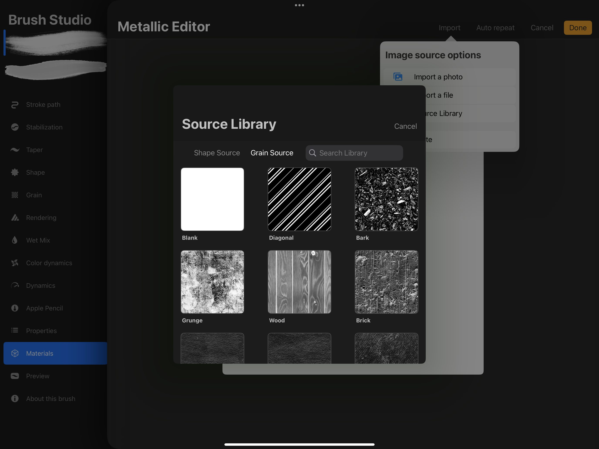
From the Materials section of the Brush Studio, tap Metallic Source > Import > Source Library. Tap a texture to exit back to the Metallic in 3D Materials and begin making adjustments.
Shape Source
Use the Shape Source library to select a shape as a base for your brush.
Grain Source
Procreate's library of pre-made textures opens by default when you enter the Source Library. You can access this from the Grain Source interface. The Source Library offers over 100 searchable textures ideal for brush creation.
Search Library
Search the grain names for particular types of textures. For example, searching "Paper" will find all the textures based on paper.
Cancel
To exit without selecting a texture, tap Cancel.
Scale
Once a Metallic Source has been selected adjust the size it appears in your stroke by adjusting the Scale slider.
Roughness
The Roughness settings define how glossy or matte the strokes of your material brush will appear and what textural grain those strokes contain.
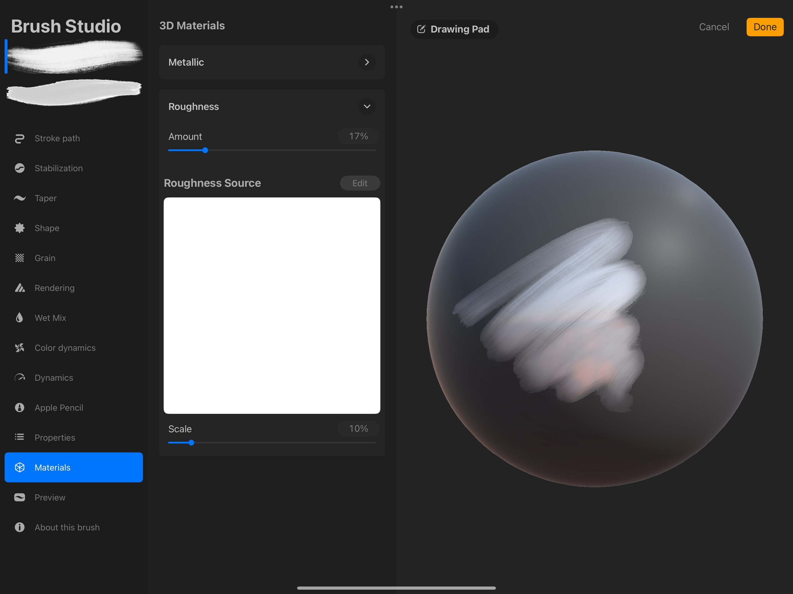
Amount
Amount sets the level of roughness appearance from 0% being Glossy through to 100% being Matte.
Roughness Source
The Roughness Sources acts in a similar way to brush grain, adding textural qualities to the way a brush lays down its roughness strokes.
All Roughness Sources import as grey-scale images. As the brush lays down a stroke, white areas of the Roughness Source will allow the roughness to show through, where dark or black areas will block the roughness effect of the brush stroke.
To add a Roughness Source, tap the Edit button if in landscape, or the white square if in portrait. This will open the Roughness Editor with options to import and edit images to turn them into tiling textures for your brushes.
The Roughness Editor works in the same way as the Metallic Editor. See above in Metallic Source for more information on how to Import, Auto Repeat and Cancel out of the Roughness Editor.
Scale
Once a Metallic Source has been selected adjust the size it appears in your stroke by adjusting the Scale slider.
Pro Tip
The drawing pad is a good way to test out your Materials Brush, but to get the full effect select a 3D object from your Gallery and try out the brush with your desired color selected.
Attribute: Preview
Change the way your brush preview looks in the Brushes interface.
The brush preview is a demo stroke that moves from left to right, increasing pressure throughout, then dropping it off towards the end. This means that any brush effects you have tied to a pressure value will be demonstrated in the preview.
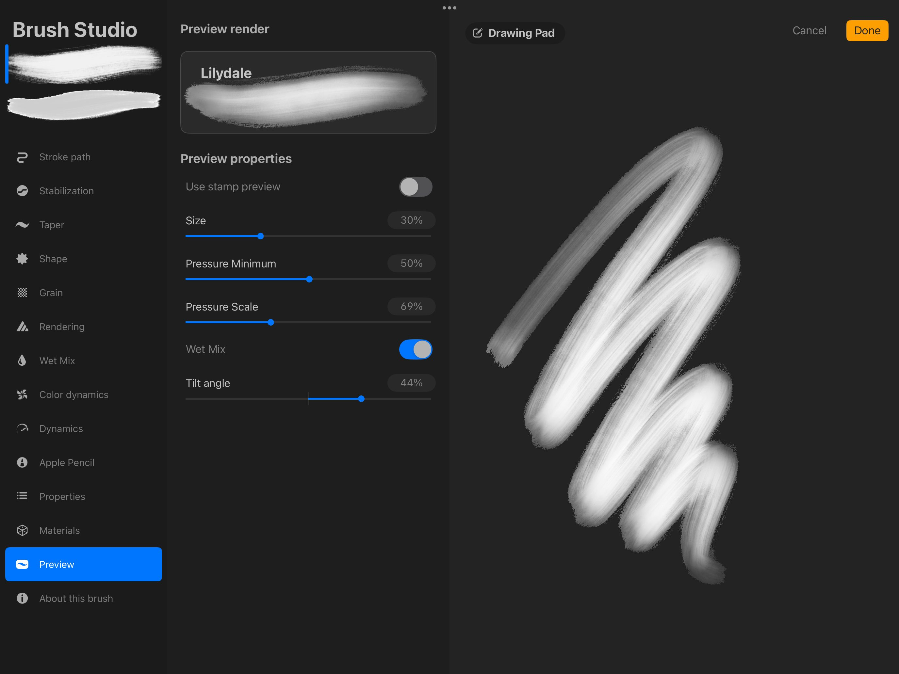
Preview Render
The render showcases the brush preview and updates as you make changes to the Preview Properties.
Preview Properties
A set of sliders and toggles for adjusting how the brush renders in the Brushes interface.
Use stamp preview
Toggle this to set your brush to preview as a singular stamp instead of a stroke, in the Brushes interface.
Size
Controls the overall size of the brush preview.
Pressure Minimum
Increase the lower pressure values shown in the preview. If this is set to maximum, the brush preview will demonstrate uniform pressure throughout the stroke.
Pressure Scale
Expand and contract the range of the pressure effects shown in the preview.
Wet Mix
Turns Wet Mix effects on or off for the brush preview.
Tilt Angle
Sets the angle for any effects that are using azimuth or barrel roll values. These are commonly used in Shape → Input style, for example.
Attribute: About this Brush
Sign your name and add your picture to your custom brushes, and create ‘reset points’. These allows you to experiment on a brush without losing your favorite settings.
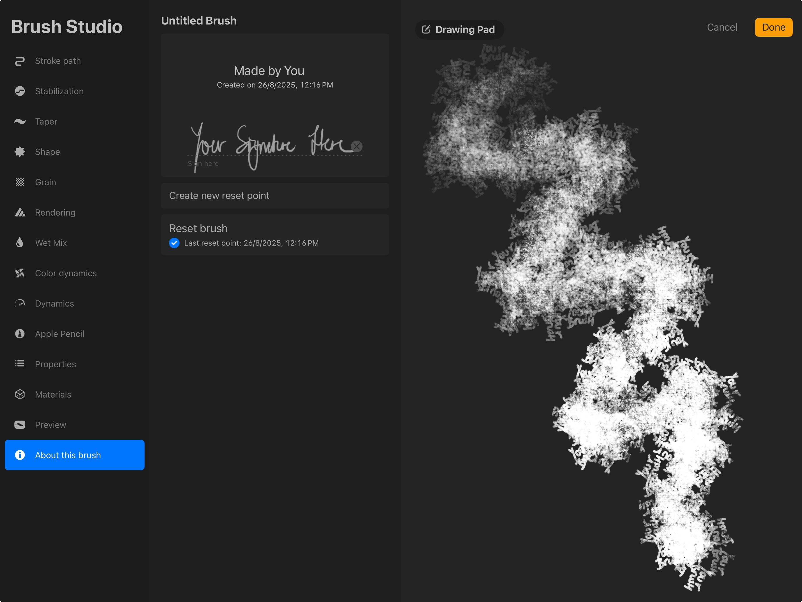
You can sign any brush you create with your name and handwritten signature. This information embeds in your .brush file. Anyone else who opens your brush in Procreate will see your credit when they look at About this Brush.
Brush Title
Since Procreate 5.4, you can no longer edit the title of a brush from the Brush Studio. Instead, tap and hold on a brush in the Brushes menu and tap 'Rename' on the menu that appears.
Author Picture
Tap here to import a picture to attach to your brush. This will open a Photos app window, and be aware that this picture will be visible to anyone you send the brush to.
Made by Name
Tap the greyed-out word Name in Made by Name to bring up the keyboard and add your name to your creation.
Date Created
A creation date and time for your brush. This information is automatically filled in for you.
Signature
Sign your name on the dotted line using Apple Pencil or your finger. If you need to start again, tap the (x) icon to clear the field.
Create New Reset Point
When you are happy with your brush design, but want to keep experimenting, save a Reset Point. You can revert back to it later if you don’t like your changes. Keep in mind that you can only have one reset point active at a time, for each brush.
Reset brush
Reset strips away all your changes and returns the brush to the condition it was in when your Reset point was set. If none was set, it will return the brush to the default state that it was in when it was created or imported.
Pro Tip
Consider duplicating your brushes if you intend to create multiple variations of each one with their own individual reset points.
Still have questions?
If you didn't find what you're looking for, explore our video resources on YouTube or contact us directly. We’re always happy to help.